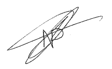

Picot Natanaël
9 Bis Rue Hugues de Payns
10600 Payns
06 23 23 50 90
Picot.Natanael@orange.fr
Objet: Candidature au poste de
Madame, Monsieur,
Etant actuellemement à la recherche d'un emploi, je me permets de vous proposer ma candidature au poste de
En effet, je suisvivement intérressé par votre annonce qui décrit u profil me correspondant parfaitement.
Travailleur rigoureux et disponible, c'est avec un grand optimisme que je postule pour intégrer votre entreprise.
Possédant une motivation sans faille, je saurai mener à bien les différentes missions que vous me confierez.
Sociable et à l'écoute, je sais m'adapter à une situation en place et pourrais ainsi m'intégrer sans le moindre problème à votre équipe.
Mon manque d'expérience professionnelle n'entame en rien ma volonté à occuper ce poste et me pousse, au contraire, à faire mes preuves.
Le challenge proposé est à la hauteur de mes espérances.
Ce remier emploi va marquer le début de ma vie active, dont la réussite est entre mes mains.
Je reste à votre disposition pour toute information complémentaire, ou pour vous rencontrer lors d'un entretien.
Veuillez agréer, Madame, Monsieur, l'expression de mes sincères salutations.
Madame, Monsieur,
Etant actuellemement à la recherche d'un emploi, je me permets de vous proposer ma candidature au poste de
En effet, je suisvivement intérressé par votre annonce qui décrit u profil me correspondant parfaitement.
Travailleur rigoureux et disponible, c'est avec un grand optimisme que je postule pour intégrer votre entreprise.
Possédant une motivation sans faille, je saurai mener à bien les différentes missions que vous me confierez.
Sociable et à l'écoute, je sais m'adapter à une situation en place et pourrais ainsi m'intégrer sans le moindre problème à votre équipe.
Mon manque d'expérience professionnelle n'entame en rien ma volonté à occuper ce poste et me pousse, au contraire, à faire mes preuves.
Le challenge proposé est à la hauteur de mes espérances.
Ce remier emploi va marquer le début de ma vie active, dont la réussite est entre mes mains.
Je reste à votre disposition pour toute information complémentaire, ou pour vous rencontrer lors d'un entretien.
Veuillez agréer, Madame, Monsieur, l'expression de mes sincères salutations.
Subject: Application for the post of
Dear,
Being currently looking for a job, I allow myself to offer you my candidacy for the post of
Indeed, I am very interested in your ad which describes a profile that matches me perfectly.
Rigorous and available worker, it is with great optimism that I apply to join your company.
Possessing an unfailing motivation, I will be able to carry out the various missions that you will entrust to me.
Sociable and attentive, I know how to adapt to a situation in place and could thus integrate myself without the slightest problem into your team.
My lack of professional experience in no way affects my desire to occupy this position and pushes me, on the contrary, to prove myself.
The proposed challenge is up to my expectations.
This first job will mark the beginning of my active life, the success of which is in my hands.
I remain at your disposal for any further information, or to meet you during an interview.
Please accept, Madam, Sir, the expression of my sincere greetings.

Dear,
Being currently looking for a job, I allow myself to offer you my candidacy for the post of
Indeed, I am very interested in your ad which describes a profile that matches me perfectly.
Rigorous and available worker, it is with great optimism that I apply to join your company.
Possessing an unfailing motivation, I will be able to carry out the various missions that you will entrust to me.
Sociable and attentive, I know how to adapt to a situation in place and could thus integrate myself without the slightest problem into your team.
My lack of professional experience in no way affects my desire to occupy this position and pushes me, on the contrary, to prove myself.
The proposed challenge is up to my expectations.
This first job will mark the beginning of my active life, the success of which is in my hands.
I remain at your disposal for any further information, or to meet you during an interview.
Please accept, Madam, Sir, the expression of my sincere greetings.